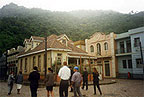

|
Autoevaluador
Enlaces
Bibliografía |
Historia mundial de la TV > 1.6 La televisión en latinoamérica
1.6 La televisión en latinoamérica
Desde que la televisión irrumpe en la vida de las sociedades iberoamericanas, se ha ido consolidando como el principal medio de difusión de masas. Como características comunes debemos señalar el carácter comercial del medio y la estrecha relación que históricamente ha guardado con los gobiernos de turno, tanto civiles como militares. Hoy como ayer, son millones los latinoamericanos que encienden, día tras día, sus televisores para entretenerse e informarse.
En sintonía con el investigador australiano John Sinclair (2000), constatamos que si bien cada país tiene su propia historia del desarrollo de la televisión, en el caso de América Latina, es posible observar tres etapas comunes a todos las naciones. A saber:
Primera etapa: correspondiente al período de implantación de la televisión durante las décadas de 1950 y 1960. Esta fase se caracterizó por el “apoyo” prestado por las redes de radiotelevisión estadounidenses (NBC, ABC y CBS) a la consolidación del nuevo medio bajo el modelo comercial. Asimismo, la influencia de las empresas norteamericanas en el Centro y el Sur del continente americano se hizo notar en la exportación de programas y en la inversión de capitales para la creación de emisoras (la presencia del consorcio Time-Life en el grupo O Globo de Brasil, por ejemplo) y en productoras de televisión (como sucedió en Argentina).
Segunda etapa: caracterizada por la madurez de la industria televisiva, tiene lugar en los años 70 y 80. Se trata de mercados nacionales consolidados con una importante producción propia de programas que en algunos géneros, como las telenovelas, se exportan de una manera generalizada..
Tercera etapa: Las emisiones televisivas vía satélite llegan hasta los hogares más remotos. Asimismo, la distribución de señales de televisión por cable alcanza en algunos países (por ejemplo, Argentina) cuotas de penetración altas.
En este nuevo escenario los grandes productores latinoamericanos están formando alianzas con empresas globales, por ejemplo Televisa (México) y Globo (Brasil) con la compañía de Rupert Murdock, News Corporation y Sky Latin America en DTH (Televisión Directa al Hogar). En consecuencia, las audiencias se internacionalizan y, al mismo tiempo, se fragmentan.
Como singularidad del continente puede decirse que grandes mercados de la región están dominados por cadenas de televisión que poseen un doble rol de productoras-emisoras de programas.
Dentro de la producción televisiva de los países que componen el mosaico iberoamericano, cabe destacar un género propio de formato televisivo que los países productores de América Latina exportan hoy a todos los continentes y por los que la televisión latinoamericana es conocida: la telenovela. Según el investigador mexicano Guillermo Orozco (2002), se trata del “producto más distinguido” de la programación latinoamericana puesto que, la telenovela, “además de reflejar rasgos de identidad, aglutina grandes audiencias frente a los televisores, provocando distintos sentimientos y evocando diversas aspiraciones”.


Estudio de TV Globo en Jacarepagua, Rio de
Janeiro, Brasil.
© www.zonalatina.com/
Zldata70.htm